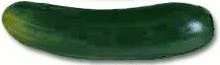

La siembra
Fecha: Es conveniente escalonar la producción, haciendo siembras cada 1
o 2 meses para un abastecimiento continuo desde noviembre hasta
abril y mayo. También puede adelantarse la cosecha haciendo almácigos en
macetitas a partir de setiembre.
Forma: Se siembra de asíento, directamente sobre el cantero. Se colocan 3 ó 4 semillas juntas cada 80 cm en una sola fila al centro del cantero.
Distancias: 50 centímetros entre plantas y 1,5 metros entre filas.
Cantidad de semillas (para 10m2): 2 gramos.
¿Qué tenemos que hacer para cuidar nuestro cultivo?
las plantas porque es necesario mantenerlas erguidas para aprovechar
el espacio.
a cuajar los frutos. Si en esta etapa las plantas sufren la falta de agua,
los frutos no llegan a buen término.
hoja. Las enfermedades están asociadas en general a excesos de humedad
en el ambiente, por lo tanto, en la medida de lo posible, debemos
mantener el cultivo sin hojas viejas para mejorar la ventilación.
La cosecha
por 2 meses más.